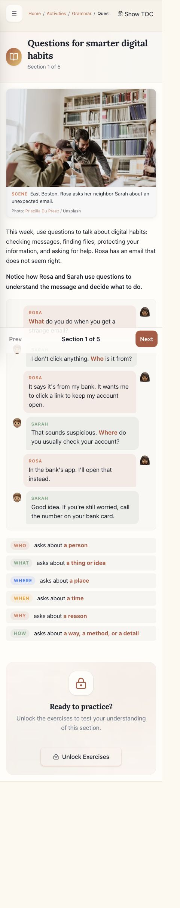
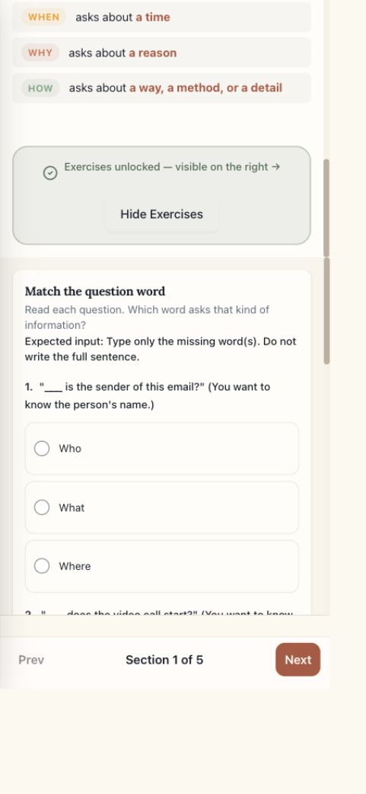
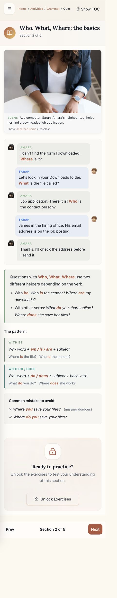
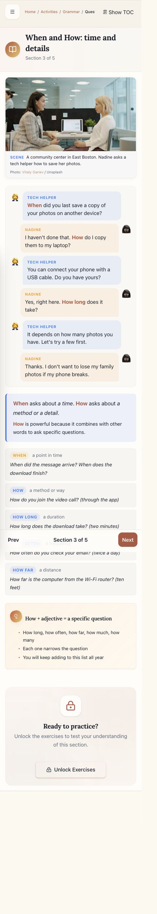
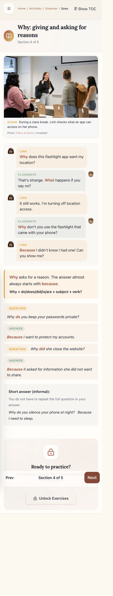
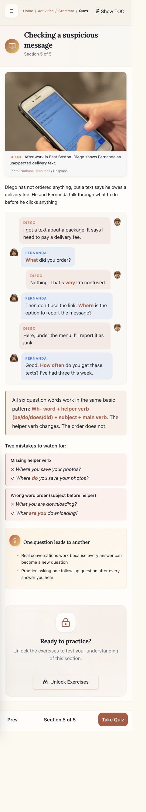
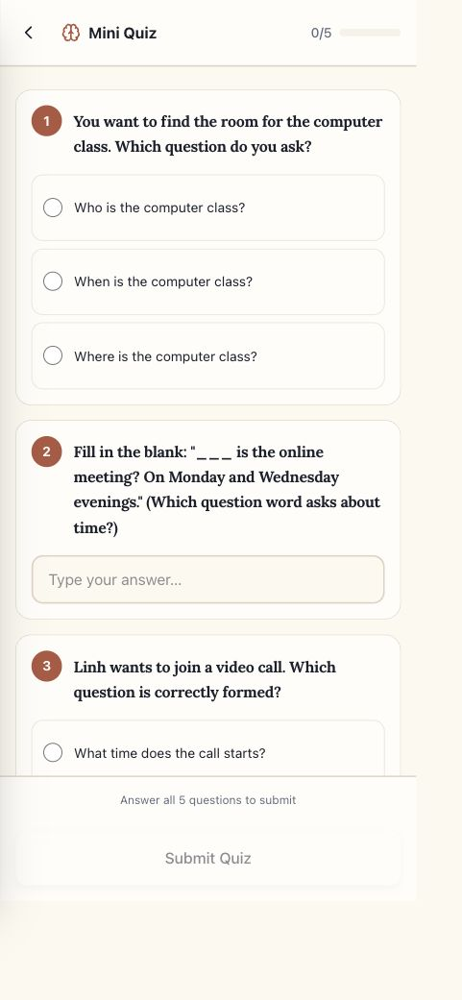

Audit: October 11, 2026. Verdict: close, but revise grammar explanations and effort-credit behavior before assigning independently.
Reviewed the live student-facing reader at a phone-sized viewport, all source exercise/quiz answers, and completion/reward code. No quiz was submitted and no end-to-end student ledger award was tested. Navigation updated the signed-in reader’s section progress. No guide code changed.
Reward findings: Week 5 only calls exercise completion for an entirely correct set. The API requires at least one exercise completion before awarding guide completion credit. Completion response points/message are not consumed by the reader; failed saves are swallowed without a student-facing retry. These are code-confirmed risks, not a demonstrated missing student award.

Relevant adult scenarios and a clear question-word overview. The large photo and six dialogue turns delay practice on a phone. The introductory question is repeated as both multiple choice and typing.

The mobile confirmation says exercises are on the right when they are below. A type-only instruction precedes mostly radio questions. Next remains available without attempting practice.

Separate BE and DO/DOES patterns help. Add a short DID + base verb model before later exercises require it. Smaller colored labels appear faint; formal contrast testing remains outstanding.

Useful time, method, duration and frequency examples. Rename How + adjective to How + another word: often is an adverb.

Replace almost always starts with because with You can begin your answer with because. Separate BE questions from DO/DOES/DID + base verb questions.

The universal helper + subject + main verb rule is misleading. Where is the file? needs no additional main verb; What happens? is a subject question. Preserve distinct patterns, with a short exception note.

Five questions, clear large controls. The displayed 100% progress is reachable before answering anything. Quiz emphasizes when/how long and formation but omits why, who and how often. Quiz submission and actual account awards were not performed during this audit.
Grammar reference: Cambridge: wh-questions. Accessibility limits: no physical-phone, screen-reader or full keyboard/contrast audit.